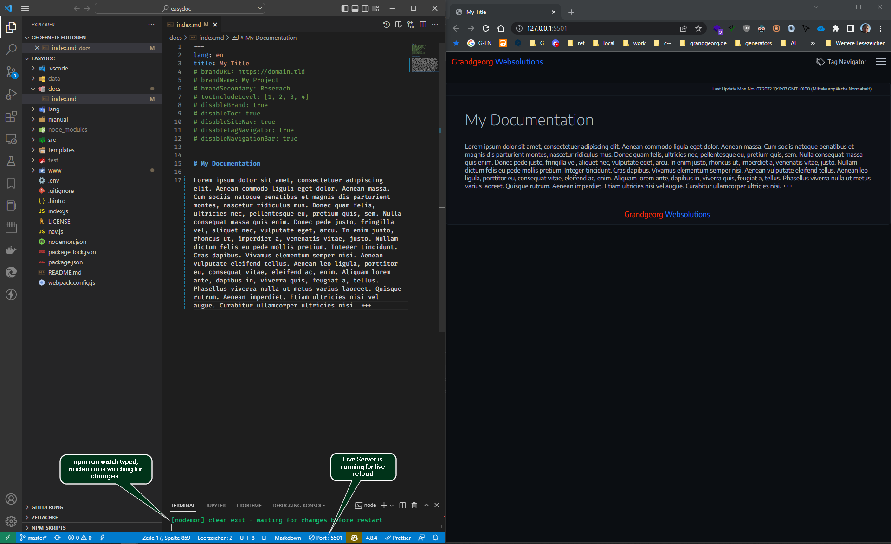

EasyDoc
A powerful technical documentation tool that generates completely local HTML pages and websites from markdown files.
created by:
Features
Generates completely local HTML Website.
- You can just open the resulting HTML-files in the
wwwdirectory locally (from filesystem) in a browser. - You can also drop / push the contents of the
wwwdirectory to a HTTP-Server.
Rich markdown support and code highlighting features
- Uses markdown-it with plugins for markdown to HTML rendering
- Uses Prism with plugins to highlight code.
Fully configurable and customizable
- Configure global and per page settings (see reference for details).
- Customize all components as you like.
- Edit SCSS files (under
src/scss) to change theme. - Edit
app.jsto change navigation etc. app.jsuses pure vanilla JavaScript without any dependencies.
Built in Navigation
- Table of contents on pages
- Individual site navigation
- Tag Navigator module
Install
Clone with git from master branch:
# clone via https:
git clone https://github.com/grandgeorg/easydoc.git
# or clone via SSH (if you have a key):
git clone git@github.com:grandgeorg/easydoc.git
Change into easydoc directory and run install:
cd ./easydoc/
npm install
You could now use EasyDoc from this directory, but we recommend, that for your documentations in different paths you use the setup.js from EasyDoc as follows:
# cd to some directory in some project of yours, where you want to setup your documentation with EasyDoc
cd /some/project/docs
# run setup.js from easydoc with node
# e.g. node D:\\srv\\vhost\\easydoc\\index.js
# in powershell you can use the following command:
# node (Get-Item -Path "D:\\srv\vhost\easydoc\index.js").FullName
node /path/where/you/cloned/and/installed/easydoc/setup.js
# edit newly generated config files (.env, nav.js, package.json - author, description, keywords) in /some/project/docs ...
# put some md-files into docs directory
# you can now run
npm run build
# if you also want to use nodemon to watch your file changes first run
npm install
# then you can run
npm run watch
Usage
# watches on file changes and runs build:
npm run watch
# or build one time
npm run build
Updating
After pulling a newer EasyDoc version, refresh the JS, CSS and font assets in your documentation project:
# run from your documentation project directory
npm run update
# or, for projects set up before the update script existed
node /path/where/you/cloned/and/installed/easydoc/update.js
Existing files in www/assets/ (CSS, JS, fonts) are overwritten with EasyDoc’s versions; favicons are left untouched. Your project’s searchApi.js is replaced with EasyDoc’s current version as well. If your package.json still lists elasticlunr (the full-text search engine used before MiniSearch), it is replaced with minisearch; run npm install afterwards.
npm audit may report a high-severity braces advisory (GHSA-vfj7-8cjw-p6xm) via nodemon → chokidar. No patched braces release exists yet. It only affects the local npm run watch tool, whose glob patterns come from your own nodemon.json. Do not run npm audit fix --force: it downgrades nodemon to 1.x. npm audit --omit=dev shows the production-relevant result.
🖿 easydoc directory structure
🗁 easydoc
├🗀 .git
├🗀 .vscode
├🟢 docs
│ └🗏 index.md 🖤
├🗀 lang 🖊️
├🗁 manual 📌
│ ├🗀 assets
│ ├🗀 img
│ ├🗏 easydoc.html
│ ├🗏 easydoc.md
│ ├🗏 easydoc-reference.html
│ └🗏 easydoc-reference.md
├🗀 node_modules
├🗀 setup 🖊️
├🗀 src 🖊️
├🗀 templates 🖊️
├🔵 www
│ ├🗀 assets 🖊️
│ ├🟢 img
│ ├🗏 index.html 🖤
│ └🗏 meta.js 🖤
├🗏 .env ✏️
├🗏 .gitignore
├🗏 .hintrc
├🗏 index.js 🖊️
├🗏 nav.js ✏️
├🗏 nodemon.json
├🗏 package.json
├🗏 package-lock.json
└🗏 webpack.config.js
╭──────────────────────────═━┈💬┈━═──────────────────────────╮
│ 🟢 input directories. Start creating files here. │
│ 🔵 output directory. Html files will be generated here. │
│ ✏️ configure EasyDoc │
│ 🖊️ change EasyDoc │
│ 📌 It's me. You are reading these documents right now. │
│ 🖤 Remove these documentation files for a blank start. │
╰──────────────────────────═━┈💬┈━═──────────────────────────╯
For configuration and further usage refer to the EasyDoc Reference
Workflow
For the most convenient use do the following:
- Start Visual Studio Code from the
easydocdirectory. - Start the Live Server extension.
- Run
npm run watch. - Put the vscode and the browser window side by side.
- Start creating and editing markdown files in
docsdirectory. - Use git if working in a team.
Workspace Example Screenshot

Workflow Example Video
Deployment
You can deploy your generated documentation to a server using:
npm run deploy
# Deployment (runs `npm run build`, then uploads the built site).
Make sure to configure the deployment settings in the .env file before running the deploy command.
The deployment process will build your documentation and then upload it to the specified server using the configured method.
SFTP Deployment
For now the only supported deployment method is SFTP. You can configure the SFTP settings in the .env file.
# --- Deployment ---
EASYDOC_DEPLOY_TYPE=sftp
EASYDOC_DEPLOY_SFTP_HOST=yourdomain.tld
EASYDOC_DEPLOY_SFTP_PORT=22
EASYDOC_DEPLOY_SFTP_USERNAME=user
# Use a private key (preferred) OR a password.
EASYDOC_DEPLOY_SFTP_PRIVATE_KEY=/path/to/id_rsa
EASYDOC_DEPLOY_SFTP_PASSPHRASE=
EASYDOC_DEPLOY_SFTP_PASSWORD=
# Remote directory the site is uploaded into.
EASYDOC_DEPLOY_SFTP_REMOTE_PATH=/var/www/vhost/doc.yourdomain.tld/public/some-doc
# Local directory to upload (defaults to the built output: www).
EASYDOC_DEPLOY_SFTP_LOCAL_DIR=www
# Optional: upload the full-text search index (searchIndex.json) to a separate
# remote path. If the value ends in ".json" it is treated as the full remote file
# path; otherwise it is treated as a remote directory that searchIndex.json is
# placed into. Only uploaded when full-text search is enabled and the file exists.
EASYDOC_DEPLOY_SFTP_SEARCH_INDEX_REMOTE_PATH=/var/www/vhost/doc.yourdomain.tld/private/search
For more information on deployment, refer to the EasyDoc Reference.